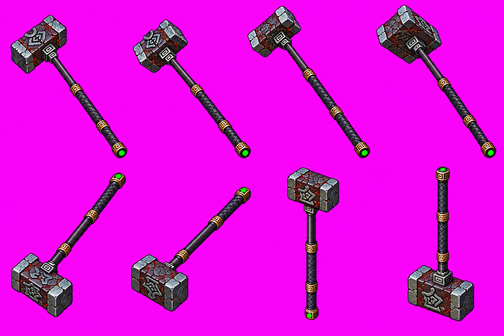
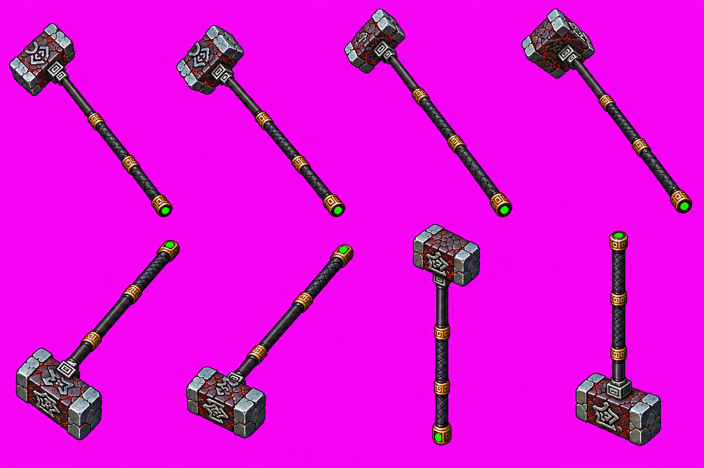
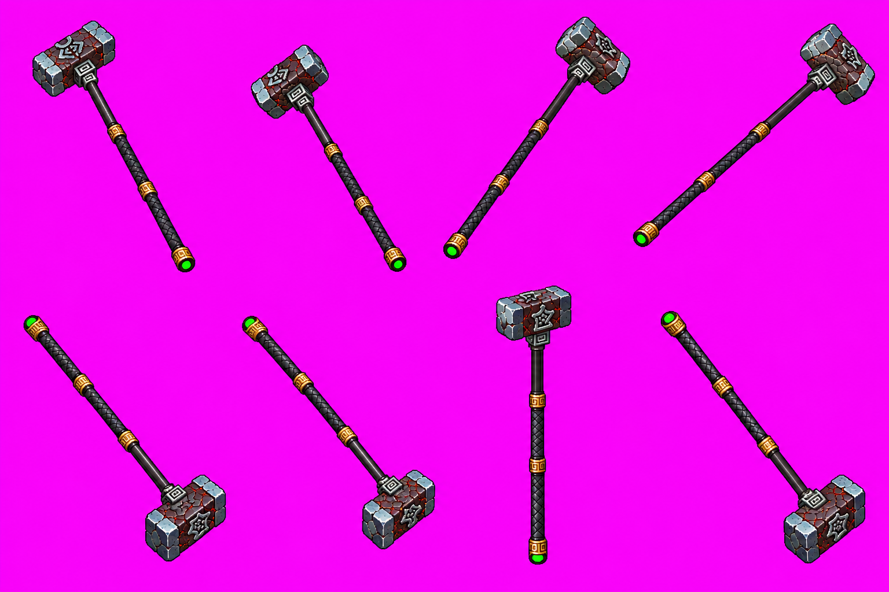
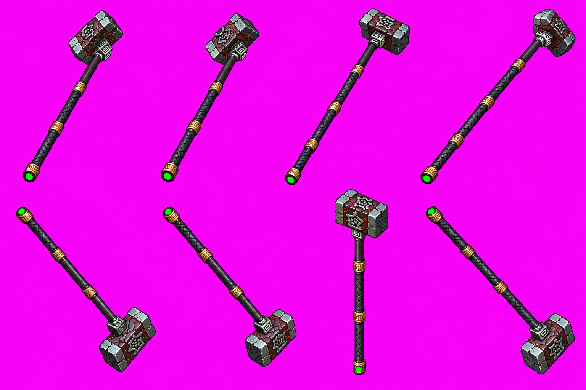
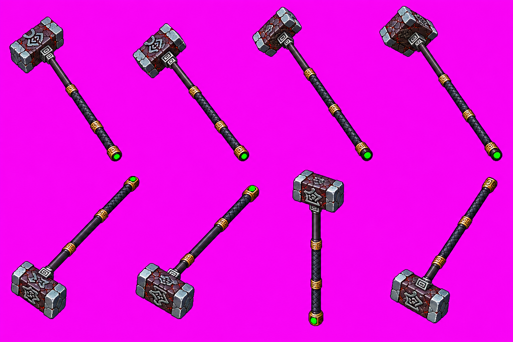

Hạo Thiên Chùy — tám pose vũ khí riêng
Phương pháp, nguồn và tái tạo · Số đo và kiểm chung · Preview bộ cắt cuối đủ năm hướng
Đang đọc số đo…
RAW các atlas đã chọn

s lượt 3 — cán dài cho hai tay cast; RAW nguyên byte.
se lượt 2 — atlas cán dài, RAW nguyên byte.
e lượt 2
ne lượt 3 — atlas cán dài
n lượt 3 — pose cuối thiếu marker và không dùng